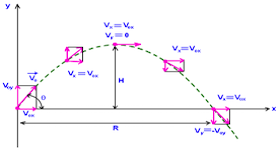

Kinematics is how we describe motion with displacement, velocity, and acceleration. It is incredibly useful, as we can perfectly calculate the outcome of an event regarding motion. For example, we can calculate how long it will take a ball to fall down a certain distance. Or, we can calculate how far something will go given an initial velocity. In the kinematic equations, every equation uses the vector forms of quantities, rather than their scalar forms. The following chart is a quick reminder of the differences.
The Kinematic Equations
The kinematic equations relate acceleration, velocity, displacement, and time together. If you know enough of these quantities, you can figure out the rest. For example, if you look at the first equation in the chart, it relates final velocity, initial velocity, acceleration, and time. So, if you knew all of those quantities except for time, you would use that equation to solve for time.
Examples
In any given kinematics problem, you should follow these steps.
1. Isolate the variables given
2. Determine the variable you need to find
3. Use the equation that relates the given variables to the variable you need to find
4. Plug in numbers, and solve
Let's say you roll a ball down a slightly slanted hill. It starts at rest, but due to gravity, the acceleration is 3 meters per second in the direction of motion. If you wanted to find after how much time the ball would be rolling at 15 meters per second, you would use a kinematic equation.
1. The variables given are acceleration, initial velocity, and final velocity. The problem says that the ball starts at rest, which means its initial velocity is 0 meters per second
2. The question asks for time, so you are solving for variable "t".
3. The first kinematic equation is the only one that relates initial velocity, final velocity, acceleration, and time all together.
4. Plugging in vf = 15, vi = 0, and a = 3, gives you t = 5s.
This interactive program allows you to see the relationship between distance and displacement. Click on the window, and use the arrow keys to move the circle around. At the top right corner, you will see the distance traveled and meters displaced.
Practice Problems
1. A ball rolls 5 meters straight ahead. What is its distance and displacement?
2. An airplane travels 50 kilometers north, then doubles back and travels 30 kilometers south. What is its distance and displacement?
3. A man runs a kilometer in a circle. When he finishes, he's in the same spot as he started in. What is his distance and displacement?
4. A skater skates 40 meters straight ahead. Wanting to impress his friends, he shows his skating prowess by suddenly turning after the 40 meters at a perfect 90 degree angle. He then travels 30 meters. What is his distance and displacement?
5. A physics teacher accidentally drops a ball two meters from the ground. He has quick reflexes, so on its way up, he catches it one meter from the ground after it bounces once. What is the ball's distance and displacement?
6. According to the program above, what is the maximum displacement of the ball? What is the maximum distance?
7. (Challenge) An airplane flies straight for 10 kilometers. Suddenly, a gust of wind offsets its course by 30 degrees. It continues to travel for 5 more kilometers. What is its distance and displacement?
Practice Answers
1.
Distance: 5 meters
Displacement: 5 meters
It travels 5 meters, so that is its distance. It is 5 meters from where it started off, so that is its displacement.
2.
Distance: 80 kilometers
Displacement: 20 kilometers
It travels 50 kilometers, then 30. It's total distance traveled is 80 kilometers. However, it travels 30 kilometers in the opposite direction it was initially flying in, so the distance between where it started and finished (aka displacement) is 50 - 30 = 20 kilometers.
3.
Distance: 1 kilometer
Displacement: 0 kilometers
He runs 1 kilometer, so that is his distance. However, he has not moved at all with respect to where he started, so his displacement is 0.
4.
Distance: 70 meters
Displacement: 50 meters
The boy travels 40 meters, then 30 meters. Therefore, the distance is 70 meters. However, he turns at a 90 degree angle. You can find the total displacement by drawing a right angle and solving for the hypotenuse.

5.
Distance: 3 meters
Displacement: 1 meters
It falls for two meters, then bounces up for one meter before caught. Therefore, the distance is 3 meters. However, the ball rises for one meter in the opposite direction that it fell in, so its displacement is 3 - 1 = 2 meters.

6.
Distance: Infinite
Displacement: 326 units
There is no limit to the distance. If you move back and forth, the distance traveled will just keep on rising. However, the ball cannot move outside of the screen. This limits the distance between the ball and the origin. The farthest possible distance away from the center can be found in any of the four corners, which will give you the number "326".
7.
Distance: 15 kilometers
Displacement: 14.55 kilometers
It travels 10 km, then 5 km. Therefore, its distance is 15 km. For its displacement, we have to take the 30 degrees into consideration. Draw a triangle where one leg is 10 km, and another is 5 km. The angle between them should be 150 degrees, because 30 degrees off course means 30 degrees from a 180 degree angle. Then use the law of cosines to solve for the final side, which is displacement.

Back to Mechanics
